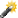
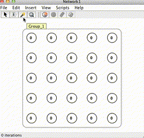

Wand tool
 The wand is used to create patterns of activation on sets of neurons. It can be thought of as a kind of virtual electrode, a way of injecting current in a network.

Some ways it can be used are to set the patterns to be learned by a Hopfield Network or to dynamically inject activation in to a running simulation.
As of the current version of Simbrain the wand only injects activation. Other uses for the wand tool are planned for future releases.
Using the wand
To use the wand:
- Click on the wand icon
- Pass the wand over neurons while left-clicking
- All neurons will reach their maximum level (the “upper bound” value), as shown in the image.
Adjusting the wand
To adjust the size of the wand in pixels (and thus how many neurons are affected by the wand) set the wand radius field in the network preferences dialog.